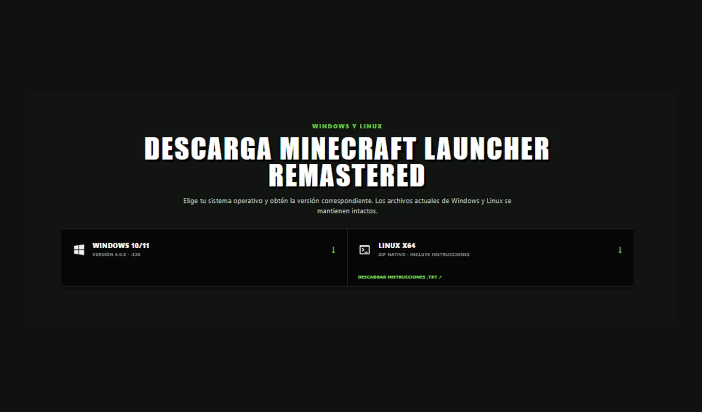
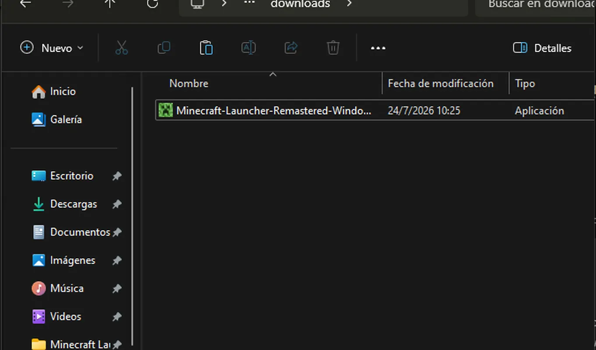

VERSIÓN 4.0.0 · WINDOWS + LINUX
MINECRAFT LAUNCHER REMASTERED
Versiones, loaders, mods y perfiles en una experiencia clara, rápida y organizada.
DESCARGAR LAUNCHERLISTO PARA EMPEZAR
TU AVENTURA EN TRES PASOS
Descarga, instala y juega. Todo está organizado para que encuentres lo importante sin perder tiempo.

WINDOWS Y LINUX
DESCARGA MINECRAFT LAUNCHER REMASTERED
Elige tu sistema operativo y obtén la versión correspondiente. Los archivos actuales de Windows y Linux se mantienen intactos.
INFORMACIÓN
DESCUBRE EL PROYECTO
Conoce las novedades, la historia del launcher y las formas de apoyar su desarrollo.

ACTUALIZACIÓN 4.0.0
Revisa todo lo añadido, mejorado, solucionado o eliminado.

ACERCA DE MINECRAFT LAUNCHER REMASTERED
Descubre el objetivo, las funciones y la identidad del proyecto.

APOYA EL PROYECTO
Tu apoyo ayuda a mantener y mejorar Minecraft Launcher Remastered.
APOYAR EN PAYPALCASTICAPI
REDES SOCIALES
Videos, desarrollo y contenido corto relacionado con Minecraft Launcher Remastered.